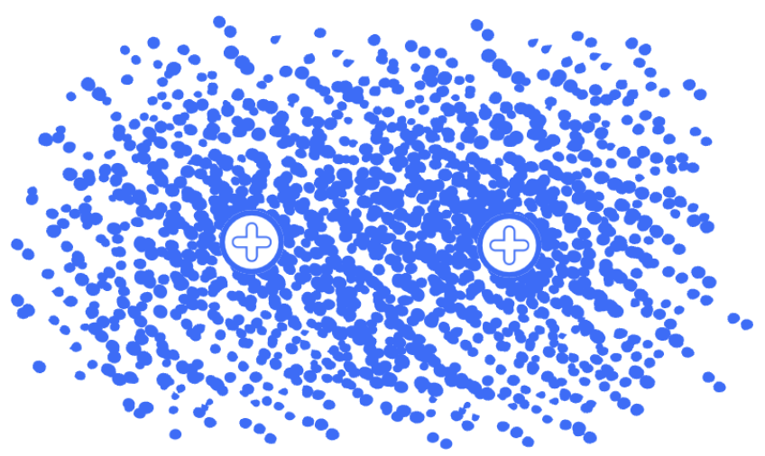

When Clouds Collide
Earlier, we asked why atoms bond. With our new knowledge, we can now approach that question with more precision.
Recall that electronegativity told us that atoms don’t always share electrons equally, and now that we know electrons are more like clouds of probability, we can now ask the question “what happens when clouds collide,” or, more accurately, “what happens when the electron wave functions of two atoms overlap?” But that doesn’t sound as cool.
If we see atoms as their quantum mechanical model, when two atoms approach one another, their respective wave functions overlap, and can combine constructively or destructively. The result is a set of molecular orbitals with different energies, including bonding and antibonding orbitals.
Imagine two sets of waves overlapping in a pond. Where the waves are in phase, their amplitudes add, when they are out of phase, they cancel. Atomic orbitals can behave mathematically similar to these ripples on a pond.
When two atoms approach one another, their atomic orbitals can overlap and combine to form molecular orbitals. If electrons occupy this new bonding orbital, it can lower the molecule’s energy and form a stable bond.

These resulting molecular orbital describes the quantum states the electrons can choose from, and basically describe where electrons will mostly be in. In a bonding orbital, constructive interference increases the electron probability density between the nuclei. The difference in electronegativity between the two atoms can help us predict how unevenly split the electron density will be between the nuclei.
Remember that stability is key for atoms! They are, as we described, lazy, and want to have the most energetically favourable outcome.
This is important! At very large separations, atoms are essentially independent, but as they approach, their interactions with each other can lower their energy. At extremely short distances, nuclear repulsion and other factors drive energy up again. The equilibrium bond length will occur at the minimum total energy between the two atoms.
Increased electron density between the nuclei increases the attractive nucleus-to-electron interactions. In a bonding situation, this can lower the total energy of the system enough to overcome the accompanying repulsive interactions. The atoms moving further or closer together means disrupting this lowest possible energy, and so there is a restoring tendency for the atoms back to equilibrium.
However, orbital overlap does not automatically produce a stable bond. The overall effect depends on which molecular orbitals are occupied and on the balance between attractive and repulsive interactions.
Remember that there are two types of interference, and we’ve only been looking at constructive interference so far. What happens when the crests and troughs of two wave functions add together and cancel out? Well, their destructive interference creates a node, a dead zone with lesser electron probability density.
In an antibonding orbital, destructive interference creates a node between the nuclei, reducing electron density in the region where it would help stabilize the bond. Occupying antibonding orbitals therefore raises the energy and weakens the bond.
As a rough analogy, you can imagine bonding orbitals like a deep energy-trough, where a ball will roll to the bottom of and rest comfortably. Antibonding orbitals would be the opposite, a steep hilltop, higher in energy with a node at the top between the nuclei. If you were to add a ball here, or an electron, it would work against the stabilization and want to roll off the hilltop.